Abra o Studio e escolha BASEPLATE

Foto da tela.
Projeto novo. Role a página até Abrir um modelo e clique no Baseplate.
Antes de qualquer coisa, olhe o canto superior direito: tem que aparecer a sua fotinho de perfil. Se aparecer Entrar, você não está conectado — chame o professor agora.
- Aparece Entrar no canto
- Clique em Entrar e use a sua conta Roblox. Sem isso não dá para publicar.
- Esqueci a senha
- Chame o professor. Não dá para seguir esta aula sem conta.
Vá para a aba MODELO
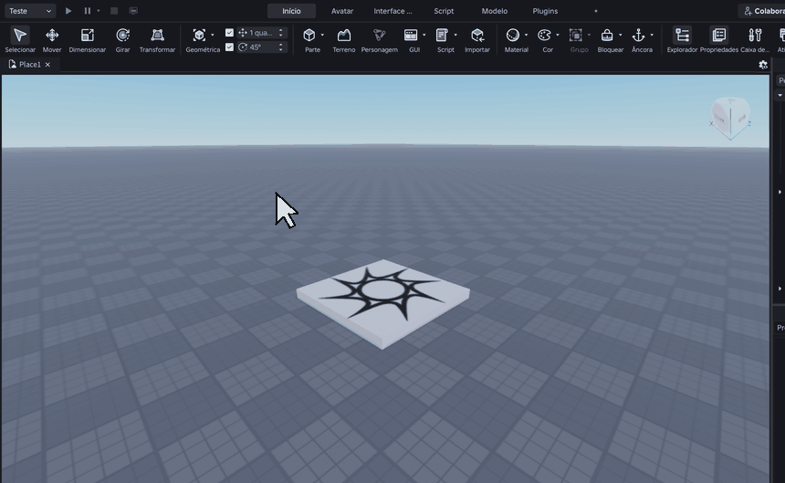
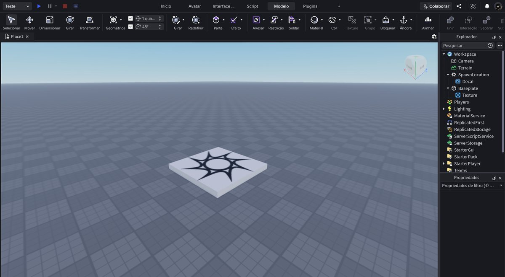
O clipe repete sozinho. Repare onde o cursor vai antes de clicar.
Clique em Modelo na linha de abas.
- Não acho
- Fica entre Script e Plugins.
Crie uma peça
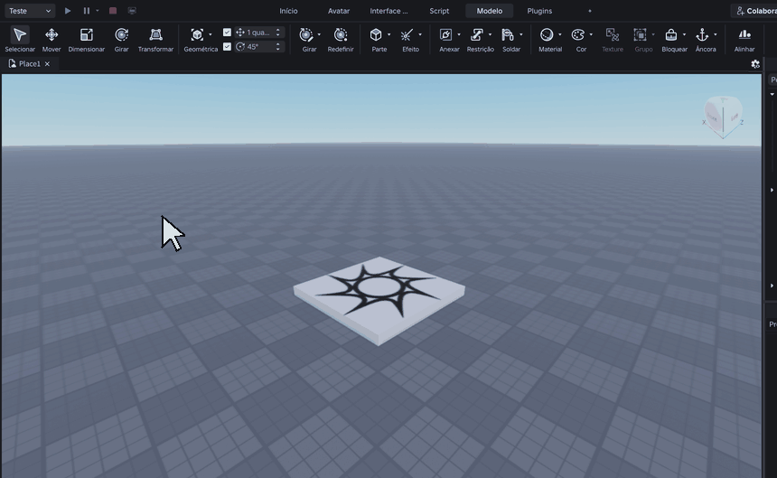
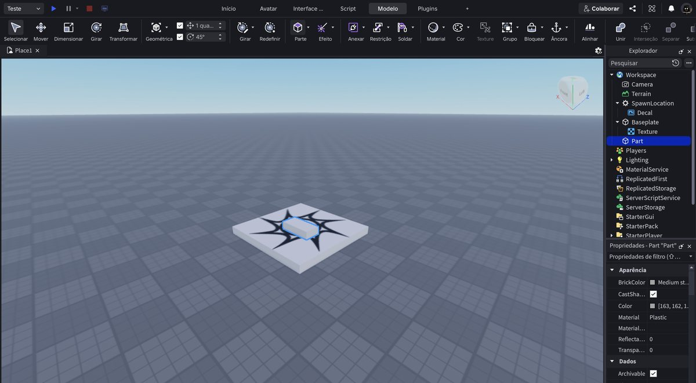
O clipe repete sozinho. Repare onde o cursor vai antes de clicar.
Clique no desenho do botão Parte.
- Nada aconteceu
- Você clicou na palavra, não no desenho.
Leve a câmera até ela
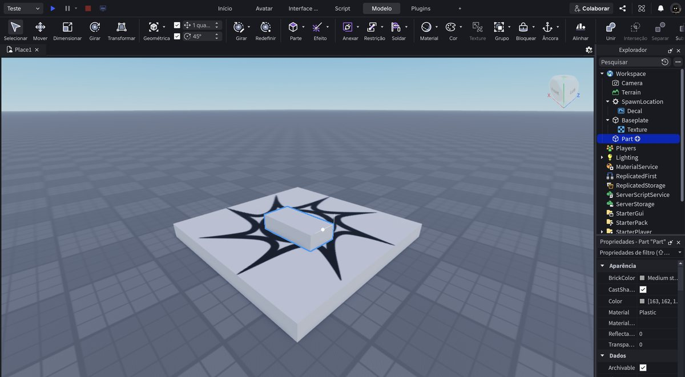
Foto da tela.
Clique em Part na lista, ponha o mouse sobre o mundo 3D e aperte F. Depois S algumas vezes para afastar.
- F não funcionou
- O mouse tem que estar sobre o mundo 3D.
Ancore
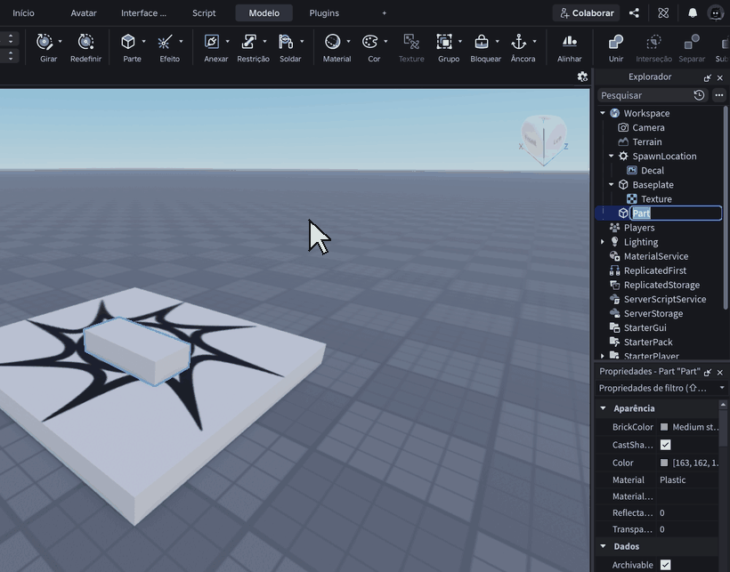
O clipe repete sozinho. Repare onde o cursor vai antes de clicar.
Clique em Âncora. Criou, ancorou.
- Não sei se ancorou
- Busque anchor nas Propriedades: a caixinha fica marcada.
Faça um palco
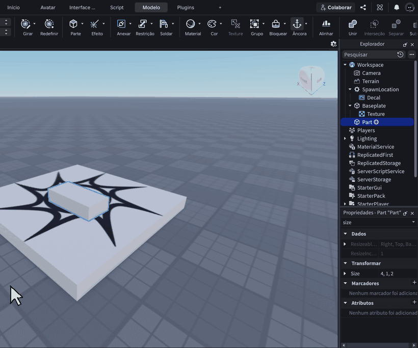
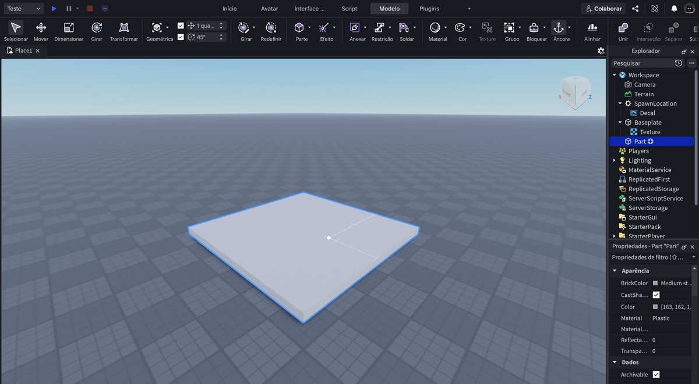
O clipe repete sozinho. Repare onde o cursor vai antes de clicar.
Na busca das Propriedades escreva size. Clique duas vezes no valor, aperte Ctrl + A e escreva 20, 1, 20. Enter.
Depois apague a busca para o painel voltar ao normal.
- Só mudou um número
- Faltou o Ctrl + A antes de escrever.
- O painel só mostra uma linha
- Apague o texto da caixa de busca.
Pinte
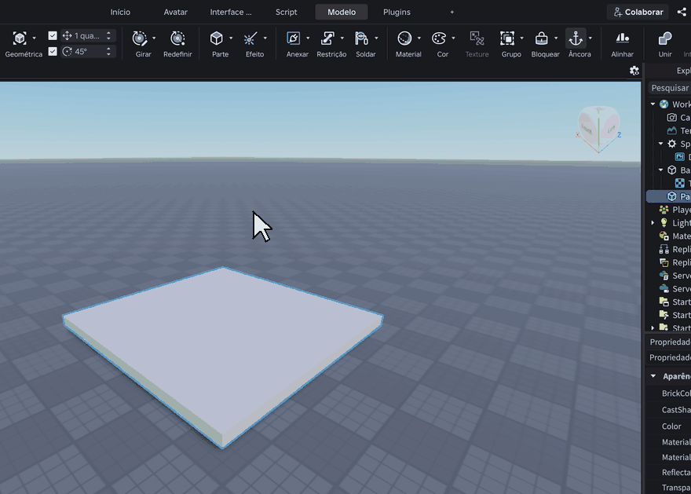
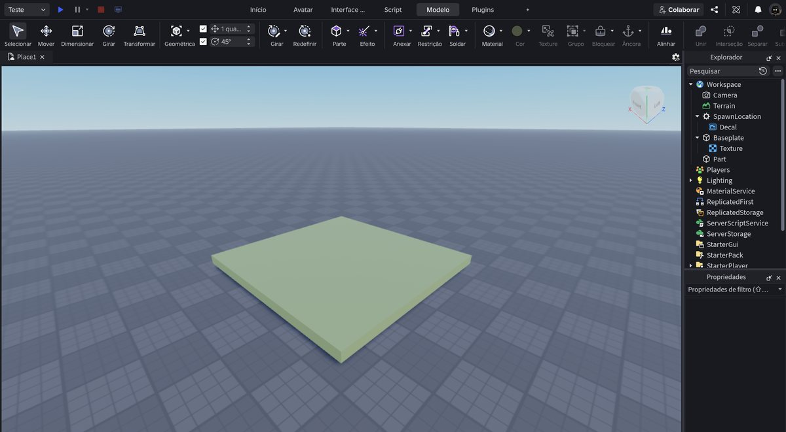
O clipe repete sozinho. Repare onde o cursor vai antes de clicar.
Setinha do Cor → escolha um hexágono → clique no círculo do botão Cor.
Escolha a cor que você quiser. É o seu jogo.
- Não pintou
- Falta o clique no círculo do botão Cor.
Dê um nome para a peça
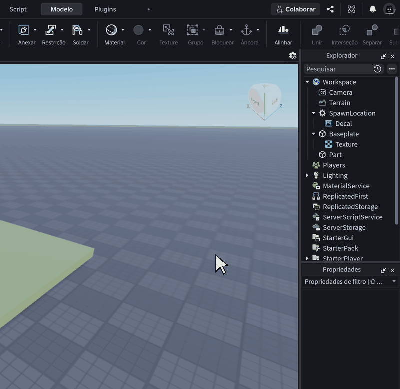
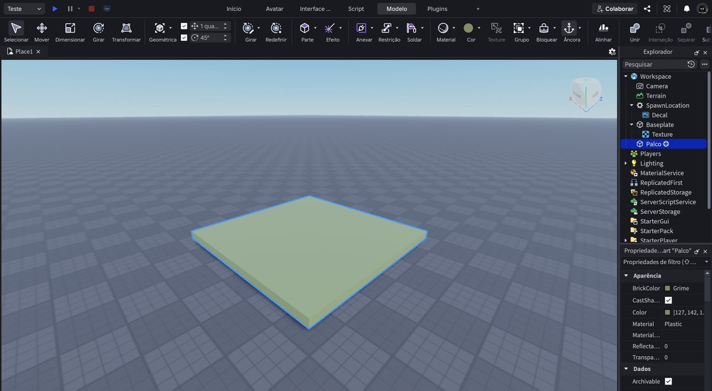
O clipe repete sozinho. Repare onde o cursor vai antes de clicar.
Botão direito na peça, na lista → Renomear → Palco → Enter.
Se sobrar tempo, faça mais peças e monte alguma coisa. O que você publicar é o que os outros vão ver.
- Voltou o nome antigo
- Termine com Enter, não Esc.
Abra a janela de publicar
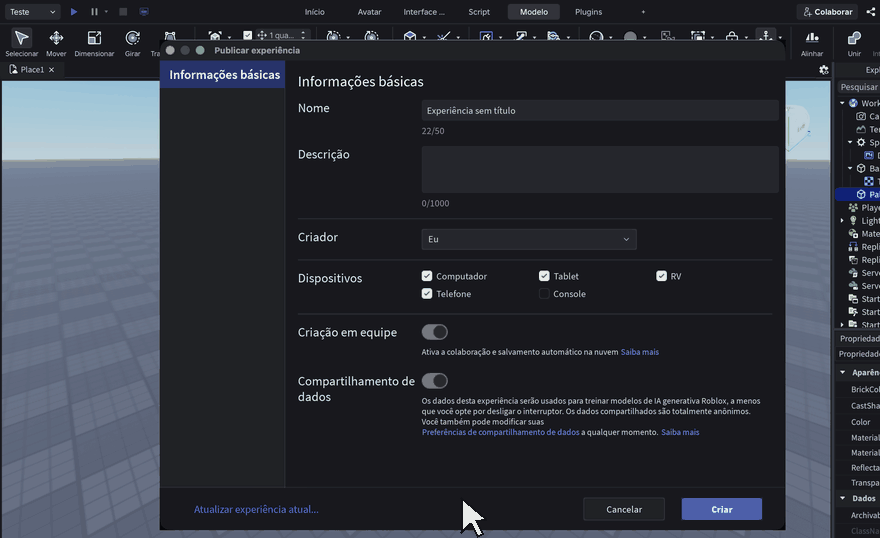
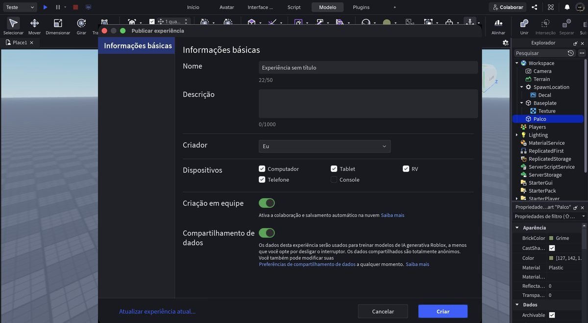
O clipe repete sozinho. Repare onde o cursor vai antes de clicar.
No canto superior esquerdo, clique em Arquivo e depois em Publicar na Roblox.
Abre uma janela com Nome, Descrição e alguns interruptores.
- Não tem menu Arquivo na minha tela
- No Windows ele fica no canto de cima à esquerda da janela do Studio. Se não achar, aperte Ctrl + Shift + S.
- Pediu para entrar na conta
- Você não está conectado. Entre com a sua conta e repita.
- Abriu 'Salvar em arquivo'
- Esse é outro. Você quer Publicar na Roblox, que sobe para a internet.
Escreva o nome e a descrição
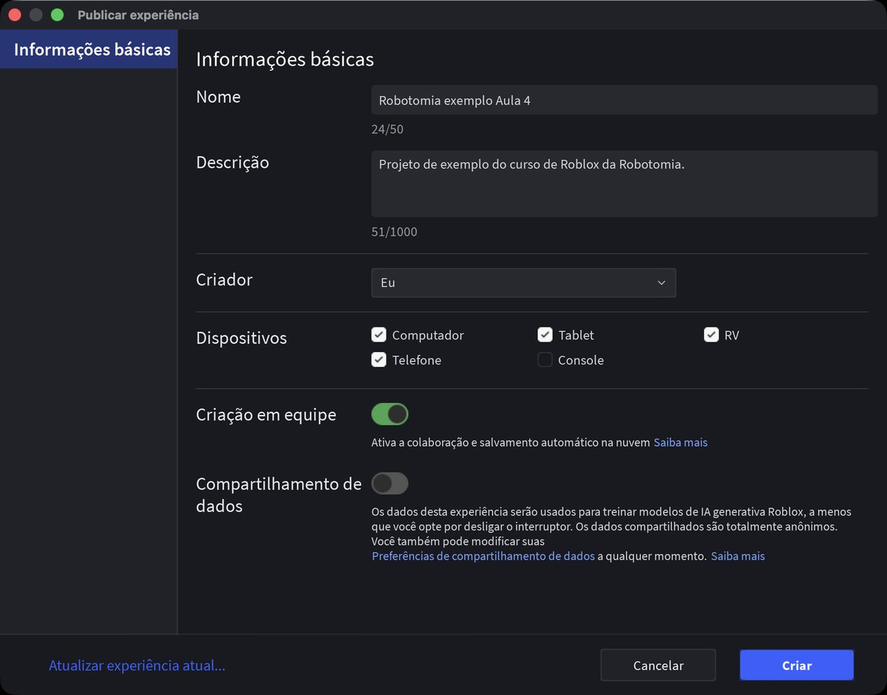
Foto da tela.
Clique na caixa branca ao lado de Nome — não na palavra Nome — e escreva o nome do seu jogo.
Depois clique na caixa da Descrição e escreva uma frase dizendo o que é. Isso é o que aparece para quem achar o seu jogo.
- Digito e não aparece nada
- Você clicou no rótulo. Clique dentro da caixa, à direita dele.
- O nome já vinha escrito
- Vinha “Experiência sem título”. Apague com Ctrl + A e escreva o seu.
DESLIGUE o compartilhamento de dados
Foto da tela.
Lá embaixo tem Compartilhamento de dados, com um interruptor verde (ligado).
Ele diz que os dados do seu jogo vão ser usados para treinar a inteligência artificial da Roblox. Clique nele para desligar. Fica cinza.
Você pode ligar depois se quiser. Desligado é a escolha da escola.
- Cliquei e não mudou
- Clique no interruptor mesmo, aquele riscozinho arredondado, não no texto ao lado.
- E o de Criação em equipe?
- Esse pode deixar ligado. Ele salva o seu jogo na nuvem, o que é bom.
Clique em CRIAR
Foto da tela.
Clique no botão azul Criar, no canto de baixo.
Demora alguns segundos. O Studio sobe o seu mundo para a internet.
- Deu erro de conexão
- Tente de novo. Se insistir, o problema é a internet da escola bloqueando a Roblox — avise o professor.
- Ficou carregando muito tempo
- Espere até um minuto. Publicar da primeira vez é lento.
- Cliquei em Cancelar sem querer
- Abra Arquivo → Publicar na Roblox de novo. Nada se perdeu.
Confira que subiu
Foto da tela.
Olhe a aba no alto da tela. Antes estava Place1; agora está escrito Lugar de e o seu nome de usuário.
Isso quer dizer: este arquivo não vive mais só no computador. Ele tem um endereço na Roblox.
- Continua Place1
- A publicação não terminou. Refaça o passo 12.
Abra o seu jogo no site da Roblox
Foto da tela.
Agora saia do Studio por um instante. No navegador, vá em roblox.com, entre na sua conta e clique em Criar (ou Create).
Você vai ver a lista das suas experiências. A que você acabou de publicar está lá, com o nome que você escreveu.
- Não acho a página Criar
- O endereço direto é create.roblox.com/dashboard/creations.
- Minha experiência não está na lista
- Atualize a página (F5). Pode demorar um minuto.
- A escola bloqueia o site da Roblox
- Então faça este passo em casa. O jogo já está publicado de qualquer jeito.
Deixe o jogo público
Foto da tela.
No site, clique nos três pontinhos do seu jogo e depois em Configurar.
Procure Permissões (ou Privacidade) e escolha Público. Salve.
Enquanto estiver Privado, só você consegue entrar. Público quer dizer que qualquer pessoa com o link joga.
- Não deixa mudar para público
- A Roblox exige que a conta tenha e-mail confirmado. Confirme o e-mail e volte.
- Quero que só a turma jogue
- Deixe privado e use Convidar para liberar os colegas, um por um.
Copie o link
Foto da tela.
Ainda no site, abra a página do seu jogo e copie o endereço que está na barra do navegador.
É esse link que você manda para um amigo, para a sua mãe, para quem quiser.
- O link não abre para o meu amigo
- Ou o jogo ainda está privado, ou ele não tem conta Roblox.
Jogue o jogo de um colega
Foto da tela.
Troque o link com a pessoa do lado. Abra o jogo dela, clique em Jogar e entre.
Repare: você está entrando no jogo de outra pessoa, pela internet, igual a qualquer jogo da Roblox.
- Fica carregando e não entra
- O jogo do colega ainda está privado.
- Abre o Studio em vez do jogo
- Você clicou em Editar. Clique no botão verde Jogar.
Mude alguma coisa e publique de novo
Foto da tela.
Volte para o Studio, mude a cor do seu palco, e faça Arquivo → Publicar na Roblox de novo.
Desta vez não pede nome nenhum: ele só atualiza o que já está no ar.
É assim daqui para a frente. Toda aula você melhora o jogo e publica de novo.
- Abriu a janela pedindo nome de novo
- Você clicou em Publicar na Roblox como. Use Publicar na Roblox, sem o “como”.
- O jogo não mudou
- Saia do jogo e entre de novo. O jogo já aberto continua com a versão antiga.
Salve no computador também
Foto da tela.
Ctrl + S → Salvar em arquivo, com o nome meu jogo.
Ter os dois é o certo: a cópia na Roblox e a cópia no seu computador.
- Já não está salvo na nuvem?
- Está, mas a cópia no computador é sua e não depende de internet.